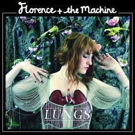

Lista dos Albuns:
- Lungs (2009) 
- Between Two Lungs (2010)
- Ceremonials (2011)
- How Big, How Blue, How Beautiful (2015)
- High As Hope (2018)
- Dance Fever (2022)


Nessa estapa iremos treinar algumas tags no HTML
A melhor banda do mundo (é só minha opinião importa hahaha )
Florence and the Machine é uma banda britânica de indie rock, liderada pela vocalista Florence Welch, com a contribuição dos musicistas Isabella Summers, Tom Monger, Robert Ackroyd, Christopher Lloyd Hayden, Mark Saunders e Rusty Bradshaw. Desde que surgiu, a banda foi muito bem recebida pela mídia.
Lista dos Albuns: